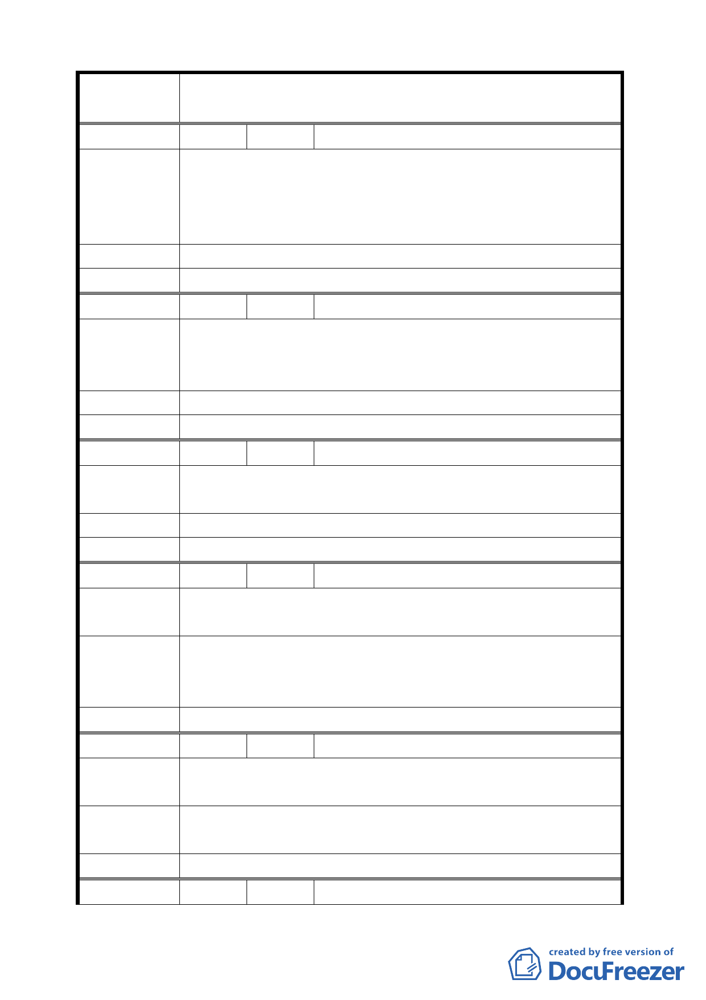

案
名
變更臺北市士林區至善段五小段 80、81、117 地號等加油站
用地為公園用地細部計畫案
編 號 32 陳情人 黃阿雪
為維護該地區的交通安全順暢與百姓生命安全起見，一定要
陳 情 理 由 劃該地為公園預定地。該業者在地方上有收買一些里民和地
方仕紳，請委員會長官要提高警覺，請勿上當，儘量維護地
方居民的權益。
建 議 辦 法 贊成為公園用地。
委 員 會 決 議 同編號 6。
編 號 33 陳情人 王秋土
1.避免業者炒作地皮。為何加油站要蓋五層樓，小心上當。
陳 情 理 由 2.為維護故宮博物院車輛順暢及故宮國寶的安全，絕對不允
許在此蓋加油站。
建 議 辦 法 贊成該地為公園用地。
委 員 會 決 議 同編號 6。
編 號 34 陳情人 臨溪社區反對加油站設置自救委員會
感謝市政府給予市民參予這個公聽會，希望本案恢復為公園
陳 情 理 由 用地，瑰寶大道計畫順利完成。
建 議 辦 法 希望本案恢復為公園用地。
委 員 會 決 議 同編號 6。
編 號 35 陳情人 施伯沂
希望蓋個優雅大方的公園，故宮至德園連接構成一段瑰寶大
陳 情 理 由 道之另類公園。
不要像小孩遊藝所擺設請大器，因為這是國際觀光景點，全
建 議 辦 法 國市民都會來，世界各地觀光客都可以看到的，請專家好好
設計。
委 員 會 決 議 同編號 2。
編 號 36 陳情人 蔡芳婷
陳情理由
故宮是國際知名文化景點，每天都有許多觀光客經過至善
路，希望此處變更為公園，好好重新整理規劃。
建議辦法
至善路上故宮路旁的私人土地一併徵收，規劃像樣的公園，
與故宮連成一氣。
委 員 會 決 議 同編號 2。
編 號 37 陳情人 陳永標
46